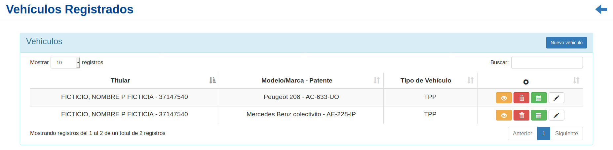
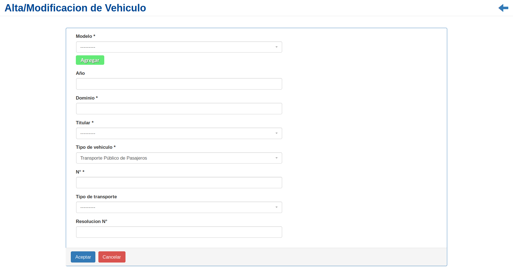
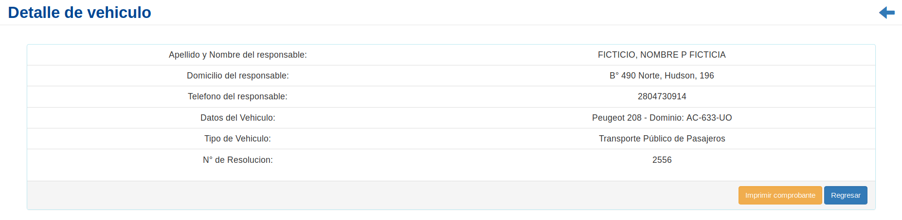
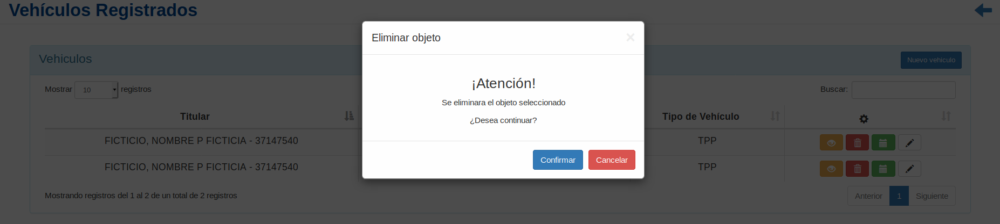
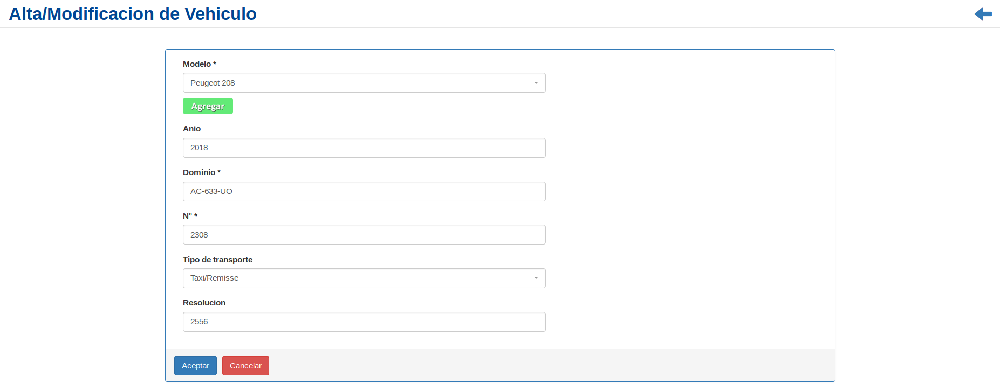

Vehículos¶
Se presentará una pantalla que contendrá un listado con todos los Vehículos que se encuentren registrados en el sistema hasta la fecha.
Junto con el listado, se presentarán un conjunto de funcionalidades que permitirán manipular cada Vehículo.
Estas funcionalidades son:
Además, si el usuario desea Registrar un nuevo Vehículo:
Nuevo Vehículo¶
Si el usuario desea crear un nuevo Vehículo, deberá presionar el botón
Nuevo Vehículo.A continuación, el sistema lo redirigirá a la siguiente pantalla. En esta parte, al usuario se le presentará un formulario y deberá ingresar los datos solicitados para dar de alta un nuevo Vehículo.
Atención
Se puede observar un botón verde con la leyenda
Agregaren el campo Modelo, el cual es utilizado para agregar un nuevo modelo respectivamente si no se encuentra registrado en el sistema. Además; El sistema siempre validará que la información ingresada sea correcta. En caso de que los datos ingresados sean incorrectos el sistema lo informará. En este punto, las posibles causas de errores son:
- Uno o más campos obligatorios vacíos.
- Uno o más campos con un formato incorrecto.
Una vez completado el formulario, se volverá a la pantalla que contendrá el listado de vehículos.
Detalle de vehiculo¶
Si el usuario desea ver el detalle de un vehiculo, deberá seleccionar en la columna de acciones asociado al vehiculo y presionar el ícono
Detalle.Una vez realizado el paso anterior aparecerá la siguiente vista emergente:
En esta parte el usuario podrá observar la información adicional del vehiculo. Si desea imprimir el comprobante, deberá presionar el botón
Imprimir Comprobante, de otro modo, si desea volver al listado inicial, presionará el botónRegresar.
Desinfectar vehículo¶
Si el usuario desea registrar una desinfección de un vehículo, deberá seleccionar en la columna de acciones asociado al vehículo y presionar el ícono
Desinfección.En esta parte al usuario se le presentará un listado con todas las desinfecciones asociadas al Vehículo.
Eliminar vehículo¶
Si el usuario desea eliminar un vehículo, deberá seleccionar en la columna de acciones asociado al vehículo y presionar el ícono
EliminarUna vez realizado el paso anterior aparecerá la siguiente ventana emergente (modal):
En esta parte el usuario deberá decidir si confirma la eliminación del vehículo o no. Si desea confirmar la eliminación deberá presionar el botón
Confirmar, caso contrario, presionará el botónCancelar.
Modificar vehículo¶
Si el usuario desea modificar los datos de un vehículo, deberá seleccionar en la columna de acciones asociado al vehículo y presionar el ícono
Modificar.Una vez realizado el paso anterior, el sistema lo redirigirá a la siguiente pantalla:
En esta parte al usuario se le presentará un formulario y deberá actualizar los datos asociados al vehículo.
Atención
Se puede observar un botón verde con la leyenda
Agregaren el campo Modelo, el cual es utilizado para agregar un nuevo modelo respectivamente si no se encuentra registrado en el sistema. Además; El sistema siempre validará que la información ingresada sea correcta. En caso de que los datos ingresados sean incorrectos el sistema lo informará. En este punto, las posibles causas de errores son:
- Uno o más campos obligatorios vacíos.
- Uno o más campos con un formato incorrecto.
Una vez completado el formulario, el usuario deberá presionar el botón
Aceptary el sistema se encargará de actualizar los datos del vehículo seleccionado.